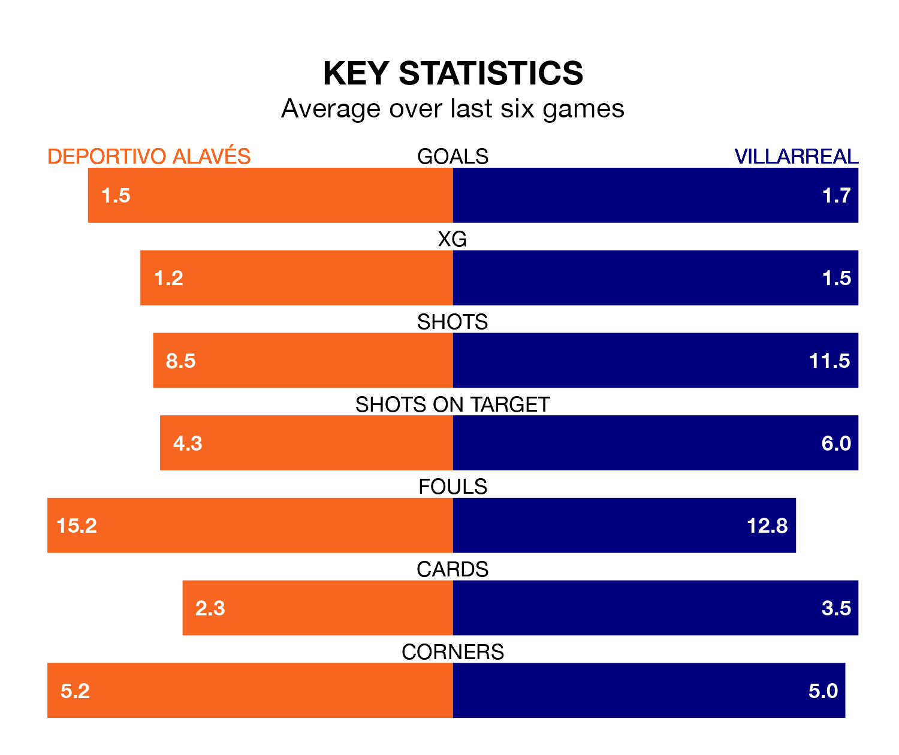

Deportivo Alavés host Villarreal on Saturday at Estadio de Mendizorroza in La Liga.
In their last league match, on February 3, Alavés lost to FC Barcelona 3-1 at home, with their goal scored by Samu Omorodion.
Villarreal drew, 0-0 at home against Cádiz on Sunday.
With 23 goals in 23 games so far this season, Alavés are scoring at below the league average rate with 1.0 goals per game. And they are conceding at an average rate, letting in 30 goals at a rate of 1.3 per game.
Villarreal, meanwhile, are above average scorers, with 1.4 goals per game, compared to a league average of 1.3. They have conceded 2.0 goals per game.
In the last 10 years, Alavés and Villarreal have played each other on 13 occasions. Alavés won seven of them, Villarreal five, and they drew once.
On average, Alavés scored 1.5 goals and Villarreal 1.8 in those matches.
Their last meeting was on October 22, when they played out a 1-1 draw.
In Gerard Moreno, the visitors have one of the league's sharpest shooters so far this season. He has notched 10 goals in 20 appearances, to sit sixth in the scoring charts.
His goal rate of one every 157 minutes is much quicker than that of Luis Rioja, Depor's top scorer with a goal every 455 minutes, and a total of four goals in 23 games.
Villarreal are 14th in the table after 23 games, of which they have won six and drawn six, earning 24 points.
The home side are three places ahead of Villarreal in 11th, with seven wins and five draws putting them on 26 points.
Alavés are in mixed form in La Liga, with three wins and a draw from their last six games.
With two wins and two draws over that period, the away team's form is slightly worse – they have taken eight points from 18, compared to Alavés's 10.
Updated: 10:28 (UTC), 06/02/24